Introduction
The Shape Editor is used to view and edit the shapes that can be placed into your levels using the Object Editor. The Shape Editor can view and manipulate files in both the DTS (.dts) and COLLADA (.dae) formats. It can be used to quickly preview shapes before they are added to a level, and provides an easy way to add, edit and delete animation sequences, skeleton nodes, and rendering detail levels.
(click to enlarge)
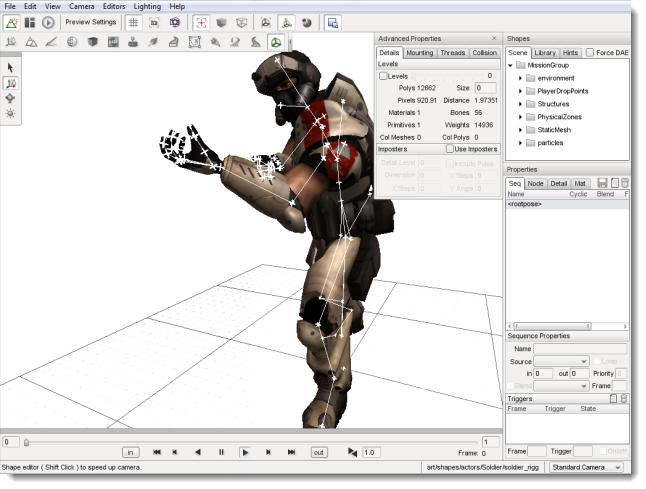
Interface
The Shape Editor can be activated from the main menu by selecting Editors > Shape Editor.
The Shape Editor interface consists of five primary sections whenever it is active:
Shape Selector
The Shape Selector panel is used to choose a shape file for viewing and editing. It is composed of 3 tabs: Scene, Library and Hints. The Scene tab allows you to select a shape that has been placed in the current level. The Library tab allows you to browse and select any DTS or COLLADA shape from your project's art folder. Finally, the Hints tab displays information about which nodes and sequences are expected by Torque for a given type of shape object.
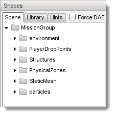
Shape View Window
The main window shows a 3D view of the selected shape, and includes animation playback controls to play and single-step the selected sequence.
(click to enlarge)
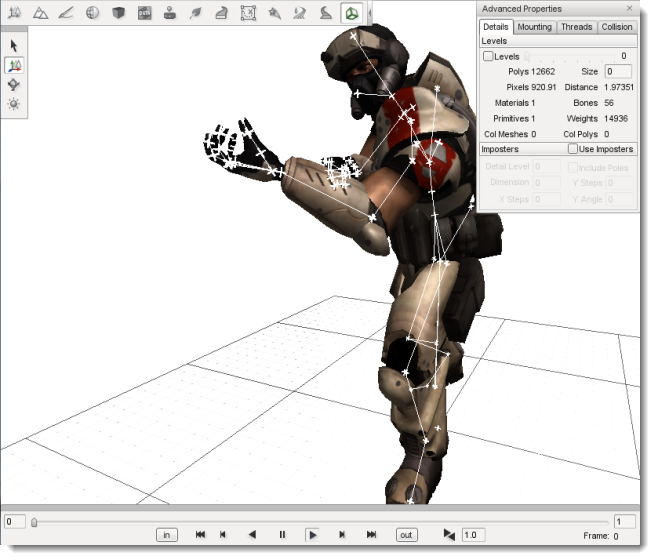
Properties Window
The Properties panel is used to view and edit the sequences, nodes, details and materials in the shape.
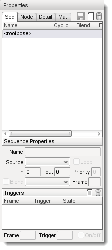
Advanced Properties Window
The Advanced Properties window displays Level-of-Detail information, and provides the ability to mount objects to other objects and animation thread control.
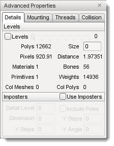
Toolbar and Palette
The Shape Editor adds several buttons to the standard World Editor toolbar to control the 3D shape view, and uses the familiar select/move/rotate palette for node transform manipulation.
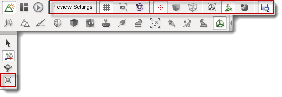
Shape Selection
To start using the Shape Editor, first you need to select a shape. There are three ways to do this:
- Select an object in the World Editor, then activate the Shape Editor from the menu bar or the toolbar. If the object uses a DTS or COLLADA file, it will automatically be selected in the Shape Editor.
- Select an object using the Scene tree in the Shape Editor. This view is the same as that used in the World Editor, and provides a convenient way to select objects that have already been placed in the level. Note that the Shape Editor only allows selection of objects that use DTS or COLLADA files; selection of Interior or ConvexShape objects will be ignored.
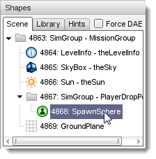
- Select a shape file using the Library tab. This view is the same as that used in the World Editor Meshes tab, and allows you to browse the DTS and COLLADA assets in your project's art folder. This method allows you to view and edit shape files that have not yet been placed in the level.
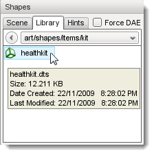
The Force DAE option checkbox at the top of the Shapes panel forces Torque to load the COLLADA file, even if an up-to-date cached.dts file is present. Note that if the model is already present in the scene (and thus already loaded into the Torque Resource Manager), the Force DAE option will have no effect, as the shape will be opened from memory instead of from disk. This option is also available in the Editor Settings panel when working in the World Editor.
You will be prompted to save if there are unsaved changes in the current shape when a new shape is selected.
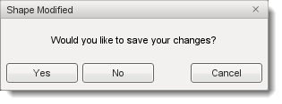
The selected shape will appear in the View window, and listings of its sequences, nodes and materials will be displayed in the Properties window.
Shape Hints
The Hints tab in the Shape Selection window shows you which nodes and sequences are required for a particular type of shape to work with Torque.
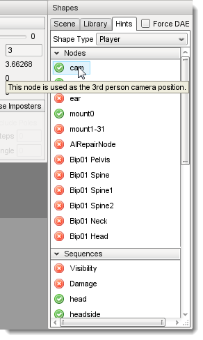
Simply select the desired object type from the dropdown menu and the list of required nodes and sequences will be displayed underneath. Items that are present in the selected shape will be marked with a tick mark. Hovering the mouse cursor over an item will display a short description of the item. Double-click the item to add it to the current shape.
Most items are optional - the shape will still load and run without a particular node or sequence, but the object may not perform correctly in-game. A Player object for example uses a node called cam as the 3rd person camera position. If this node does not exist, the shape origin is used instead, which will probably not be correct for most character shapes.
It is easy to extend the Shape Editor hints for custom object types by adding to the list in: tools/shapeEditor/scripts/shapeEditorHints.ed.cs.
Shape View
The Shape View window displays the shape as it would be seen in-game, and also provides helpful rendering modes such as transparent, wireframe and visible nodes.
(click to enlarge)
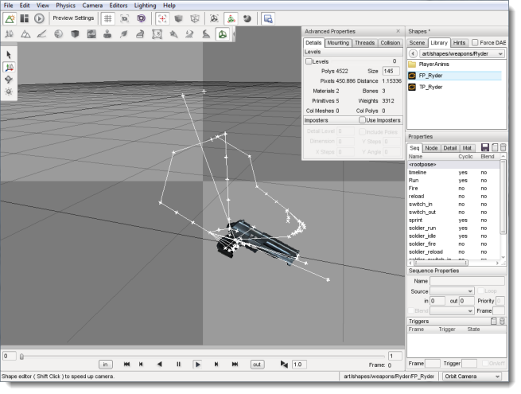
The camera can be rotated by dragging the right mouse button, translated by dragging the middle mouse button (drag left+right buttons if your mouse does not have a middle button), and zoomed using the mouse wheel. Use the Camera->View menu (or the dropdown list in the bottom right corner) to switch between the Standard/Perspective view and the orthographic views (Top, Bottom, Left, Right, Front, Back).
Hovering the mouse over a shape node will display the node name, and left clicking a node in the view will select it in the
Node Properties panel (and vice versa). Once a node is selected, its transform can be modified by dragging the 3D gizmo similar to how objects are positioned in the World Editor.
Animation Controls
At the bottom of the Shape View window are the animation playback controls:

As well as allowing the selected sequence to be scrubbed with the slider, stepped one frame at a time, or played normally, the start and end frames of the sequence can be easily modified to facilitate sequence splitting or to correct off-by-one-frame looping errors. Sequence triggers appear as thin, vertical bars at the appropriate frame (as shown in the image above).
Pressing the in or out button, or modifying the text box directly (remember to hit Return to apply the change), will set the start or end frame of the sequence to the current slider position.
Properties Window
The Properties window is where you can view and edit the sequences, nodes, detail levels and materials in the shape. The top right corner has three buttons, which do the following:
- Save the shape
- Add a new sequence, node or detail; and
- Delete the selected sequence, node or detail
The Sequences tab (displayed as "Seq" onscreen) lists the sequences available in the shape, as well as a number of different properties about the selected sequence. In addition, the 'root' (non-animated) pose can be selected for display in the Shape View window.
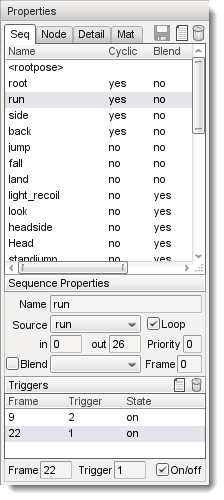
The sequence properties available to view and edit are:
Name: The name of the sequence. To rename a sequence, simply edit the
value and press Enter.
Source: The source animation data for the sequence, for example, the path to an external DSQ file, or the name of another sequence in the shape.
Priority: The priority of the sequence. This determines which sequence will take precedence when more than one sequence is attempting to control the same node.
in The first frame in the source sequence used for this sequence. Change this value to clip the start of the source sequence. This sequence will then start on the specified frame of the source regardless of what other frames may be before it in the source sequence.
out: The last frame in the source sequence used for this sequence. Change this value to clip the end of the source sequence. This sequence will then end on the specified frame of the source regardless of what other frames may be after it in the source sequence.
Loop: Flag indicating whether this sequence loops around when it reaches the last frame.
Blend sequence: Name of the sequence to use as a reference for generating blend transforms.
Blend flag: Flag indicating whether this sequence is a blend, that is, whether it can be played over top of another sequence.
Blend frame: Frame in the Blend sequence to use as a reference.
Triggers: The list of triggers in the sequence. Select a trigger and edit the values to modify the trigger.
Adding a sequence
An important feature of the Shape Editor is the ability to add new sequences to a shape from external animation files (DSQ or DAE). This allows animations to be shared by shapes that have a common skeleton (such as character models).
To add a new sequence click the New Sequence button. If a sequence is currently selected when the button is clicked, the new sequence will use that selected sequence as its initial source for animation keyframes. You can change the Source using the dropdown menu to select a different sequence, or to Browse for an external DSQ or DAE file. If the <rootpose is selected, pressing the
New Sequence (  ) button will open the Browse window automatically. ) button will open the Browse window automatically.
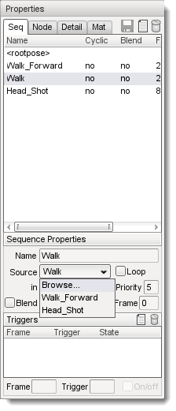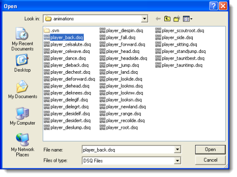
Once the sequence has been created, you can edit its properties - including the start and end frames - using the Sequence Properties panel.
Currently, very few 3D modeling packages support the COLLADA <animation_clip element, which means a model with several animations will appear to have only a single sequence (or 'clip') when loaded into Torque. The Shape Editor allows you to split this single animation into multiple sequences by specifying different start and end frames for each sequence. The procedure for splitting animations is as follows:
- Select the combined animation sequence (usually called ambient).
- Press the New Sequence button to make a copy of this sequence, then rename the new sequence as desired.
- Use the animation slider in the 3D view to find the desired keyframe that you want the new split sequence to start at. Press the
In button to set the start frame.
- Use the animation slider in the 3D view to find the desired keyframe that you want the new split sequence to stop at. Press the
Out button to set the start frame.
Blend Animations
A blend animation is special in that it stores node transforms relative to a reference keyframe, instead of absolute transforms like other animations. This allows the sequence to be played on top of another sequence without forcing the animated nodes to a particular position.
The Shape Editor allows you to set and clear the blend flag for a sequence, as well as change the reference keyframe if desired. Each of these operations requires that a valid reference sequence and reference frame number is specified.
For example, most Player characters will have a blended look animation. The animation is a blend so that the character's head can be made to look around while also doing something else (like running or swimming). To make the look animation a blend, first we set the reference sequence (e.g. root) and frame (e.g.
0), then we can set the blend flag.
Nodes Tab
The nodes tab shows the node hierarchy and various properties of the selected node.
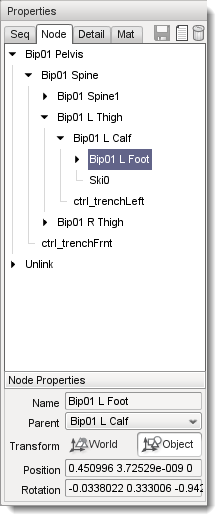
The node properties available to view and edit are:
Name: The name of the node. To rename, simply edit the value and press
Enter.
Parent: The parent of the node in the hierarchy. A new parent can be selected from the dropdown menu if desired.
Transform: The position and orientation of the node. Node transforms can be edited in either World mode (where the transform is relative to the shape origin), or Object mode (where the transform is relative to the node's parent). Node transforms can also be edited visually in the Shape View window by selecting the node and dragging the axis gizmo, similar to how object transforms are edited in the World Editor. In World mode, the gizmo uses the global X,Y,Z axes, while in Object mode, the gizmo uses the node relative X,Y,Z axes (useful for seeing which way the node points for eye or cam nodes)
Editing Nodes
The Shape Editor allows shape nodes to be added, moved, renamed and deleted.
To add a node, simply press the New Node button in the top right corner of the Properties panel. If a node is currently selected, it will automatically be used as the initial parent for the new node. A new parent node can be selected using the dropdown menu. Renaming the node is as simple as typing a new name in the edit box and pressing
Enter to apply the change.
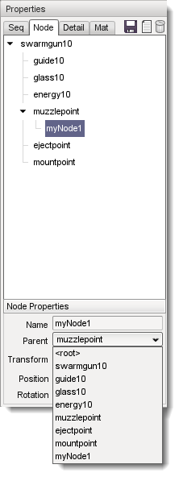
There are two ways to edit node transforms: The first way is to manually edit the position and rotation values in the Node Property panel. This method is most useful when trying to set an explicit value. For example, you may require that a node be offset by exactly 2 units in the X direction from its parent node. Node transforms can be specified as either relative-to-parent (Object mode) or relative-to-origin (World mode).
The second way to edit node transforms is in the 3D Shape View. Simply select the desired node in the 3D view or in the node tree then drag the axis gizmo to the correct position and orientation.

It should be noted that the Shape Editor tool is not intended as a replacement for a fully-functional 3D modeling application, and as such, it only allows the non-animated transforms of the shape nodes to be edited. That is, the node transforms when the shape is in the root pose. You cannot use the Shape Editor tool to define new animation keyframes. For this reason, it is recommended to edit node transforms only when the <rootpose is selected in the Sequence Properties list. Node transforms
can be edited when any sequence is selected, but the results may not be as expected, since animated parent nodes will affect the node transform as seen in the Shape View.
To delete a node, simply select it in the 3D Shape View or the node tree and press the
Delete  button in the top right corner of the Properties panel. Note that deleting a node will also delete all of its children. button in the top right corner of the Properties panel. Note that deleting a node will also delete all of its children.
The Detail tab of the Properties pane lists the detail levels and associated geometry (meshes) in the shape, as well as allowing certain properties to be edited.
If the Levels checkbox is checked on the Details tab in the Advanced Properties window, then selecting a mesh or detail level in the tree will switch to that detail level in the 3D view. The bounding box for the selected object can be displayed using the
Toggle Bounding Box button on the toolbar. To view all collision geometry (as wireframe) no matter which detail level is selected, use the
Toggle Collision Mesh button on the toolbar.
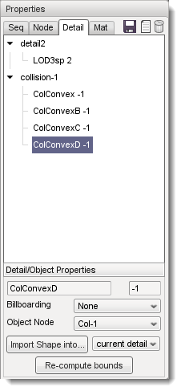
Name: (top-left field in Detail/Object Properties section) The name of the mesh or detail level. Note that an object may contain multiple level-of-detail meshes. Changing the object name will change the name of all meshes for that object.
Size (top-right field in Detail/Object Properties section) The pixel size of the mesh or detail level. Changing the size for a mesh will move it from one detail level to another (creating a new detail level if required). Changing the size of a detail level will change the size for all meshes in that detail.
Billboarding Allows a mesh to be set as a billboard.
Object Node The name of the node this object is attached to. Changing this value will change the node for all level-of-detail meshes of the object.
Import Shape into... Import geometry from another shape file. See Importing Geometry for more details.
Re-compute bounds Recalculate the shape bounding box using the current pose and detail level.
The Shape Editor also allows meshes to be hidden inside the 3D view (equivalent to the ShapeBase::setMeshHidden script method). Simply right-click a mesh in the detail tree to toggle the hidden state. Note that all detail-level meshes for that object share the same hidden state, so hiding the Head 2 mesh will also hide any other meshes for the Head object.
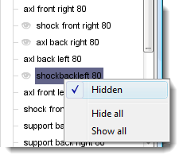
The Shape Editor allows you to import geometry from another DAE or DTS file into the current shape
via the "Import Shape into..." button. Geometry in the external file may be added to the currently selected detail level or to a new, automatically created detail level. The size of the new detail level can be edited after the geometry has been added.
The dropdown to the right of the "Import Shape into…" button has two options:
- The current detail option is useful when combining separate files that you want to be rendered at the same detail level. For example, if a player character was split into body part models as follows:
player_torso.dts
player_head.dts
player_left_arm.dts
player_right_arm.dts
player_left_leg.dts
player_right_leg.dts
To combine the models, open player_torso.dts in the Shape Editor, switch to the Details tab then Import each of the other files into the current detail. When the shape is rendered, all body parts will be rendered together.
+-base01
+-start01
+-Torso Object Torso with details: 2
+-Head Object Head with details: 2
+-LeftArm Object LeftArm with details: 2
+-RightArm Object RightArm with details: 2
+-LeftLeg Object LeftLeg with details: 2
+-RightLeg Object RightLeg with details: 2
- The new detail option is useful when combining separate files that represent different detail levels of the same shape. For example, a vehicle model may have the following detail level files:
truck_lod400.dts
truck_lod200.dts
truck_lod60.dts
truck_col_lod-1.dts
To combine the models, open truck_lod400.dts in the Shape Editor, switch to the Details tab then Import each of the other files into new detail levels. The single truck object now has 3 visible detail levels (at pixel sizes 400, 200 and 60), and a single, invisible collision detail level (size -1).
+-base01
+-start01
+-Truck Object Truck with details: 400 200 60
+-Collision Object Collision with details: -1
Note that when the new detail option is selected, the Shape Editor examines the filename of the imported model to determine the detail size. If the filename ends in "_LODX" (where X is a number), the new detail level will be created with size X. The detail level size can be changed after import if needed.
Materials Tab
The Materials tab (labelled as "Mat" in the window) shows the materials specified in the shape, as well as the Material each one is mapped to.
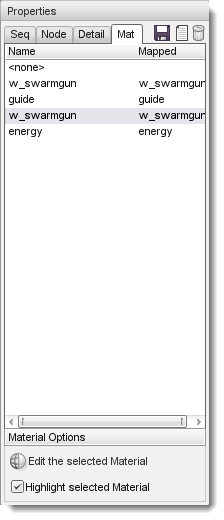
(click to enlarge)
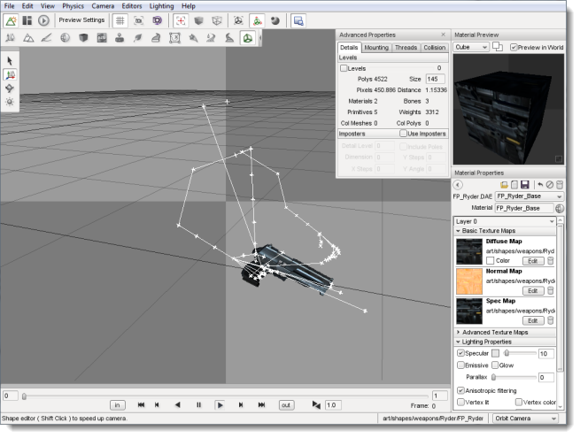
Selecting a material while the Highlight selected Material option is set will highlight all of the primitives that use the material in the shape view. Pressing
Edit the selected Material will open the Material Editor dialog, allowing you to modify the Material properties and view the results in real-time in the Shape Editor view window. Hit the Back to Previous Editor button in the upper-left corner of the Material Properties pane to return to the Shape Editor. Do not forget to save any changes you make before returning to the Shape Editor.
Advanced Properties Window
The Advanced Properties Window allows you to further change the settings of the model loaded in the shape editor.
The detail size and mesh characteristics for each LOD need to be carefully determined in order to reduce the visual artifacts associated with switching and rendering detail levels. The Details Tab of the Advanced Properties window provides a convenient way to view and edit detail levels without having to re-export the model. It also allows non-rendered collision and LOS-collision detail levels to be visualised.
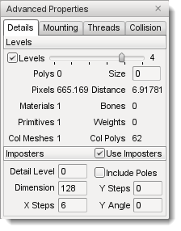
The detail level properties available to view and edit are:
Levels: When set, the current detail level is selected by moving the slider. When unset, the current detail level is selected based on the camera distance, in the same way as LOD is handled in-game.
Current DL: The index of the currently selected detail level is shown to the right of the slider track.
Polys: The number of polygons (triangles) in the current detail level.
Size: The size (in pixels) above which the current detail level will be selected. This value can be edited to change the size of the current detail level (remember to press Return after editing the value to apply the change).
Pixels: The current size (in pixels) of the shape. This value is an approximation based on the shape bounding box, viewport height, and camera distance.
Distance: The distance from the shape origin to the camera.
Materials: The number of different materials used by all meshes at the current detail level.
Bones: The number of bones used by all skinned meshes at the current detail level. Non-skinned meshes will display 0 for this value.
Primitives: The total number of primitives (triangle lists, strips or fans) in all meshes at the current detail level. This is the minimum number of draw calls that will be executed for this detail level.
Weights: The number of vertex weights used by all skinned meshes at the current detail level. Non-skinned meshes will display 0 for this value.
Col Meshes: The total number of collision meshes in this shape.
Col Polys: The total number of polygons (triangles) in all collision meshes in this shape.
The Details Tab of the Advanced Properties window allows imposter detail levels to be added and edited. Imposters are a series of snapshots of the object from various camera angles which are rendered instead of the object when this detail level is selected. An imposter detail level is usually the last visible detail level (smallest positive size value).
The Mounting Tab of the Advanced Properties window allows you to attach other models to the main shape to visualise how they would look in-game, or to fine tune the position and rotation of mount nodes. When a model is mounted, it inherits the position and rotation of the node it is mounted to and will animate along with it.
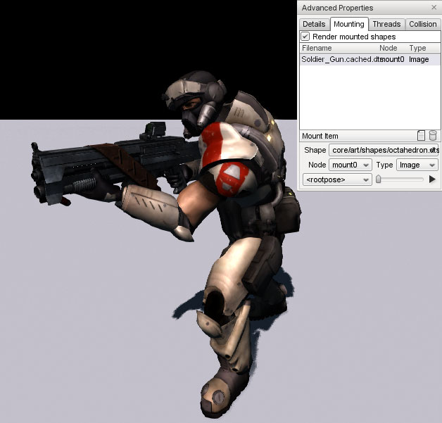
Press the Mount New Shape or
Delete Mounted Shape buttons to add or remove mounted models respectively. The following properties of the selected mount can be modified:
Shape: DTS or DAE model file to mount.
Node: Node (on the main shape) to mount to. Only nodes that follow the mountX and hubX naming conventions will appear here.
Type:
- Object: Mount the model as a SceneObject. The model's origin is attached to the selected mount node. This is equivalent to mounting the object using the following script call:
%obj.mountObject(%obj2, 0);
- Image: Mount the model as a ShapeBaseImage. The model's mountPoint node (or origin if not present) is attached to the selected mount node. This is equivalent to mounting the object using the following script call:
%obj.mountImage(%image, 0);
- Wheel: Mount the model as a WheeledVehicle tire. The mounted shape's origin is attached to the selected mount node, and it is rotated to face the right way (whether on the left or right side of the vehicle). This is equivalent to mounting the object using the following script call:
%car.setWheelTire(0, %tire);
Sequence: Select a sequence for the mounted shape to play. Playback can be controlled using the slider and play/pause button to the right of the sequence dropdown box.
The Threads Tab of the Advanced Properties window allows you to set up threads to play multiple sequences simultaneously, and to view transitions between sequences. A set of animation sequence playback controls that mirror the main animation controls are provided as a convenience so you don't have to mouse too far to test out a new thread. The mini-timeline slider is also used to indicate sequence transition information.
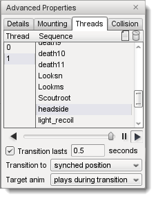
Thread: The index of the thread. Press the Add New Thread
or
Delete Selected Thread buttons to add or remove threads respectively. If the shape contains any sequences, there will always be at least one thread (index 0) defined.
Sequence: Select the sequence for this thread to play. Changing the selected sequence while the thread is playing (and transitions are enabled) will cause a transition to the new sequence.
Transition flag: If enabled, changing the selected sequence for the thread will cause a transition from the current pose to the target pose. During the transition period, node transforms are smoothly interpolated towards the target pose.
If transitions are disabled, changing the selected sequence for the thread will switch node transforms to the new sequence immediately.
Transition lasts: Transition duration in seconds. The default for Torque 3D is 0.5.
Transition to: Selects the start frame in the target sequence; the target sequence begins playing from this point. When slider position is selected the target sequence will play from wherever the mini-timeline slider has been set. Torque 3D defaults to having the new sequence start at position 0.0 so it is likely that you'll want to keep the mini-timeline slider all the way to the left when in this mode.
When synched position is selected, the new sequence will start playing at the same position along the timeline as the currently playing sequence. While in this mode, the mini-timeline slider will change from yellow to red during the transition period.
Target anim: Controls whether the target sequence plays during the transition period. When plays during transition is selected the target sequence will play during the transition; node transforms will be interpolated towards the changing target pose.
When pauses during transition is selected the target sequence will not play during the transition, but will start once the transition has ended. Node transforms will be interpolated towards the initial target sequence frame.
(click to enlarge)
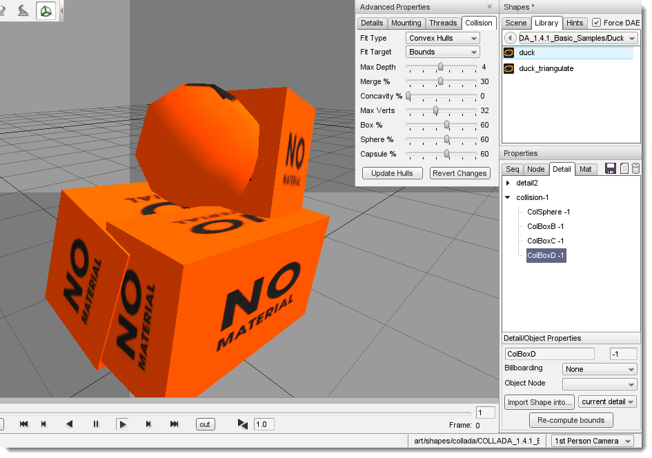
The Shape Editor can auto-fit geometry to a part or the whole of the shape for use in collision checking. Each time the settings are changed, the geometry in detail size -1 is replaced with the new auto-fit geometry. The node Col-1 (and any child nodes) may also be modified.
Fit Type: The type of mesh to auto-fit for this collision detail (see table below for details).
Fit Target: The geometry used to generate the auto-fit mesh. The target is either 'Bounds' (fit to the whole shape) or one of the shape sub-objects.
Max Depth: For convex hull auto-fit meshes, this specifies the maximum decomposition recursion depth. Increase this value to increase the number of potential hulls generated.
Merge %: For convex hull auto-fit meshes, this specifies the volume percentage used to merge hulls together. Increase this value to make merging less likely, and thus increase the number of final hulls.
Concavity %: For convex hull auto-fit meshes, this specifies the volume percentage used to detect concavity. Decrease this value to be more sensitive to concavity (and thus more likely to split a mesh).
Max Verts: For convex hull auto-fit meshes, this specifies the maximum number of vertices per hull. Increase this value to produce more complex (and CPU expensive) hulls.
Box %: For convex hull auto-fit meshes, this specifies the maximum volume error below which a hull may be converted to a box. Increase this value to allow more hulls to be converted to boxes.
Sphere %: For convex hull auto-fit meshes, this specifies the maximum volume error below which a hull may be converted to a sphere. Increase this value to allow more hulls to be converted to spheres.
Capsule %: For convex hull auto-fit meshes, this specifies the maximum volume error below which a hull may be converted to a capsule. Increase this value to allow more hulls to be converted to capsules.
Update Hulls: Re-compute convex hulls using the current parameters.
Revert Changes: Revert convex hull parameters to the values used for the most recent hull update.
The following types of geometry can be generated. The Box, Sphere and Capsule types are generally the most CPU efficient, and are converted to true collision primitives when the shape is loaded. The other types are treated as convex triangular meshes - the more triangles, the more expensive it is to test for collision against the mesh.
| Type | Desciption |
|---|
| Box | Minimum extent object aligned box |
| Sphere | Minimum radius sphere that encloses the target |
| Capsule | Minimum radius/height capsule that encloses the target |
| 10-DOP | Axis-aligned box with four edges bevelled; you can choose X, Y or Z aligned edges |
| 18-DOP | Axis-aligned box with all edges bevelled |
| 26-DOP | Axis-aligned box with all edges and corners bevelled |
| Convex Hull | Set of convex hulls |
The k-DOP (K Discrete Oriented Polytope) types push 'k' axis-aligned planes as close to the mesh as possible, then form a convex hull from the resulting points as shown below.
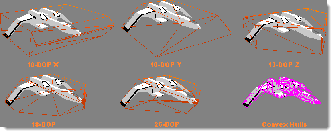
The Convex Hull fit type performs a convex decomposition of the target geometry to generate a set of convex hulls. The basic algorithm is described
here. For each hull that is produced, the hull volume is compared to the volume of a box, sphere and capsule that would enclose the hull. The hull is replaced with the primitive type that is closest in volume to the hull with volume % difference less than Box, Sphere or Capsule % respectively. If none of the primitive volumes are less than their respective error setting, the hull will be retained as a triangular mesh.
Toolbar and Palette
The Shape Editor displays the following buttons on the World Editor Tool Settings
Bar:
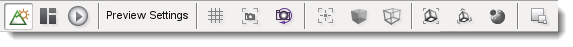
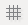 Toggles display of the grid
 Centers the shape, and zooms the camera so that the shape extents fit into the view Centers the shape, and zooms the camera so that the shape extents fit into the view
Toggles orbit node camera mode. When enabled, selecting a node will center the camera orbit on the node.
 Toggles display of shape nodes Toggles display of shape nodes
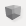 Toggles shape transparent rendering mode
Toggles shape wireframe rendering mode
Toggles display of the shape bounding box
Toggles display of the selected object (Details Properties tab) bounding box
Toggles display of the shape's collision meshes
Toggles display of Advanced Properties window
The Shape Editor Palette is similar to that in the World Editor, and allows you to select, translate and rotate nodes in the Shape View window.
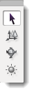
The Shape Editor Palette also includes a mode allowing the sun in the view window to be rotated by dragging the left mouse button.
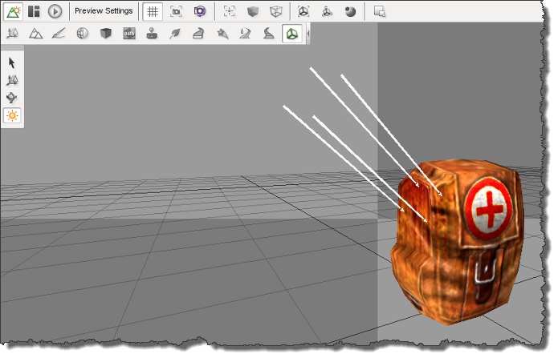
Shape Editor Settings
The Shape Editor settings dialog can be accessed from the main menu by selecting Edit Editor Settings, and allows the appearance of the editor to be customized. These settings are persistent and will be automatically saved and restored between sessions.
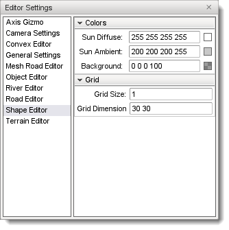
Saving Changes
The Shape Editor does not modify the DTS or COLLADA asset file directly. Instead, changes made in the editor are saved to a TSShapeConstructor object in a separate TorqueScript file. This file is automatically read by Torque before the asset is loaded, meaning you can safely re-export the DTS or COLLADA model without overwriting changes made in the Shape Editor tool. The change set will be re-applied to the shape when it is next loaded by Torque.
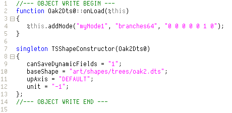
If needed, you can also re-edit the generated TSShapeConstructor object, either manually with a text editor, or by using the Shape Editor tool again.
To save changes to the current shape, simply press the save button  in the top right corner of the Properties window. The script filename is the same as the DTS or COLLADA asset filename, only with a .cs extension. For example, saving changes to ForgeSoldier.dts would save to the file ForgeSoldier.cs in the same folder. in the top right corner of the Properties window. The script filename is the same as the DTS or COLLADA asset filename, only with a .cs extension. For example, saving changes to ForgeSoldier.dts would save to the file ForgeSoldier.cs in the same folder.
The Shape Editor TSShapeConstructor object may also be accessed directly from the console. For example:
- Dump the shape hierarchy to the console (handy for debugging shape issues):
ShapeEditor.shape.dumpShape();
- Save the modified shape to DTS (instead of saving the change-set to a TSShapeConstructor script):
ShapeEditor.shape.saveShape("myShape.dts");
- Set ground transform information (not yet available in Shape Editor UI):
ShapeEditor.shape.setSequenceGroundSpeed("run", "0 4 0", "0 0 0");
Conclusion
This document has provided an overview of the shape editor's functionality. This editor is developed with artists in mind, allowing them to make in-engine changes.
| {kind=link}
{kind=link}
{kind=link}
{kind=link}
{kind=link}